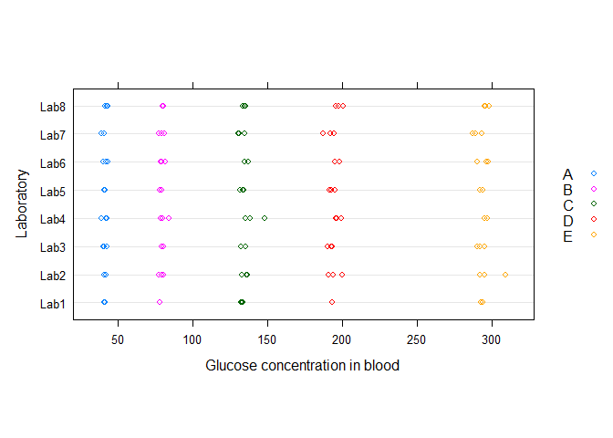
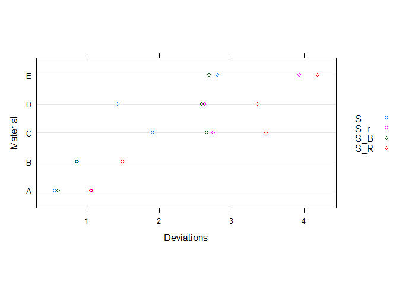
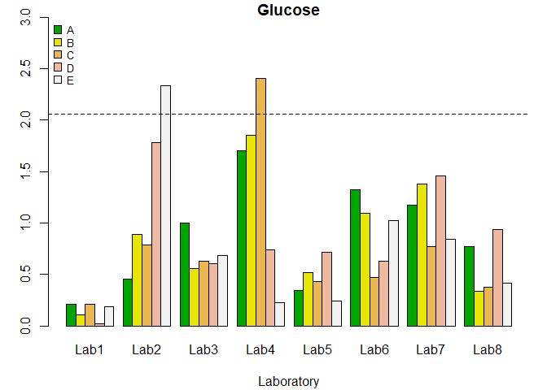
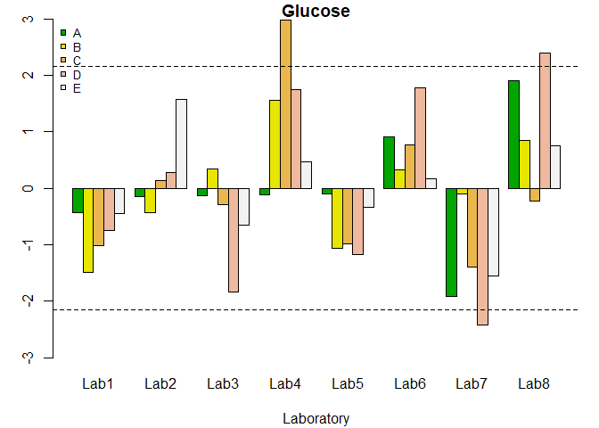
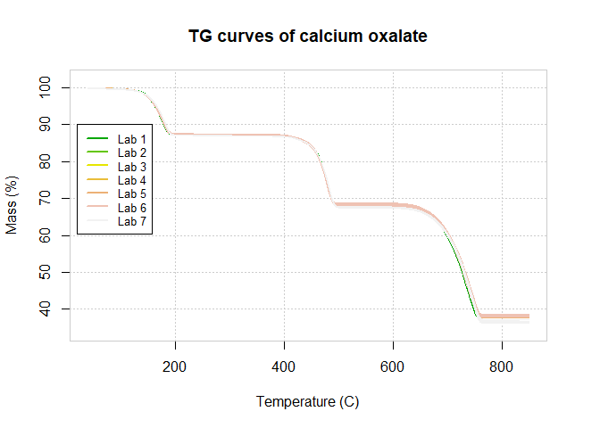
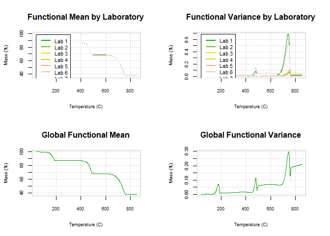
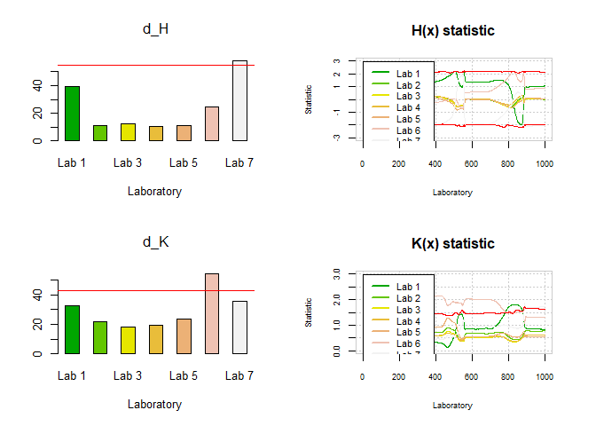
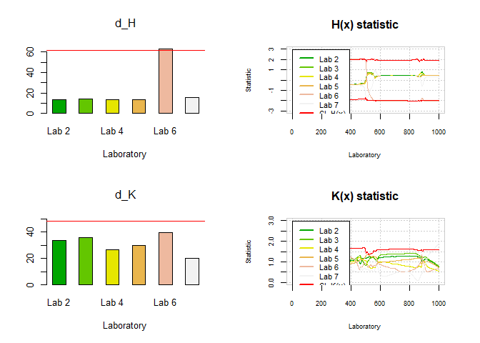

The main objective of the ILS package is to detect laboratories that provide not consistent results, working simultaneously with different test materials, from the perspective of the Univariate Data Analysis and the Functional Data Analysis (FDA).
The ILS package can identify laboratories that provide significantly different results through the estimation the Mandel’s h and k scalar statistics, based on the ASTM E691 and ISO 5725-2 standards. Additionally, the package has implemented tools to assess the presence of outliers using the Cochran and Grubbs tests.
Furthermore, Analysis of Variance (ANOVA) techniques are provided, both for the cases of fixed and random effects, including confidence intervals for the principles parameters.
Moreover, one of the novelties of this package is the incorporation of tools to perform an ILS from a functional data analysis approach. Accordingly, the functional nature of the data obtained by experimental techniques corresponding to analytical chemistry, applied physics and engineering applications (spectra, thermograms, and sensor signals, among others) is taking into account by implementing the functional extensions of Mandel’s h and k statistics.
ILS package addresses several concepts and approaches which will be discussed in detail in the later sections of this article. The most relevant concepts can be found below:
Interlaboratory Study (ILS)
This concept can be defined as a control procedure to evaluate the performance of a group of laboratories through a collaborative trials. In an Interlaboratory Study, an adequate number of laboratories are chosen to participate in the experiment with the aim of analyzing the samples and obtain results.
Participating laboratories receive samples (previously homogenized or to be homogenized by the laboratories) for analysis, then, the measurements results of the laboratories are evaluated according to the degree of data variability. Some of the most common factors that may be a cause of variability are: the equipment of laboratories, operators, materials, temperature and humidity, among others.
Repeatability and Reproducibility studies (R&R)
Repeatability and reproducibility (R&R) studies are a relevant methodology in quality control that assess the accuracy of a measurement system. In addition, R&R studies allow the identification of errors and sources of variation in the measurement process, and are essential to ensure the reliability and accuracy of the results.
This tool of quality control focuses on two key aspects of measurement:
Repeatability: Repeatability is the variation between successive measurements of the same part or trait by the same person using the same gage. In other words, how much variation do we see in measurements taken by the same person, on the same part, using the same tool.
Reproducibility: Reproducibility is the difference in the average of the measurements made by different people using the same instrument when measuring the identical characteristics on the same part. In other words, how much variation do we see in measurements taken by different people on the same part using the same too.
Consistency tests
Several scalar statistical techniques are frequently applied to study the consistency of test results from the different laboratories that participate in an ILS. Standard ASTM E-691 (Standard Practice for Conducting an Interlaboratory Study to Determine the Precision of a Test Method) recommends applying only one graphical technique from Mandel’s k and h statistics [2], while ISO 5725-2 (Accuracy – trueness and precision – of measurement methods and results) recommends, in addition to the graphic technique, to use the Cochran and Grubbs.
The 2 standards mentioned can be consulted in the following accesses:
ANOVA tests
The technique of Analysis of Variance (ANOVA), the effect of the laboratory factor over the response can be studied. The variance of repeatability and reproducibility can be also estimated when an ANOVA random effects model is considered, as shown in ISO 5725-2 [1]. On the other hand, if a fixed effect model is fitted, in addition to the F test, multiple comparisons of means can be performed with the Tukey Honest Significant Difference (HSD) method.
Functional Data Analysis (FDA):
Functional Data Analysis is a relatively new branch of statistics that takes curves as unit of analysis, also surfaces, and volumes defined in a continuum (such as time, or frequency’s domain). Considering the recent advances in computing science, and the increasing amount of data generated by experimental techniques and sensors, the FDA has had a great development in recent years. In fact, we have many statistical methodologies that have been developed and extended to the functional case, such as exploratory analysis, regression, classification, analysis of variance, and time series.
In the specific case of ILS, FDA extensions for Mandels’s h and k have been proposed and described by Flores, in addition to other works where the FDA descriptive analysis had been introduced for ILS studies.
The present ILS library implements and calls some of their routines in order to perform outlier detection in the framework of the Interlaboratory Studies. Thus, regarding to ILS with scalar response, there are some interesting and useful computational tools in R software.
Particularly, the metRology package estimates the uncertainty of the measurement, and performs the required statistical calculations for Interlaboratory Studies, whereas multcomp performs analysis of variance (ANOVA) through F and Tuckey tests.
On the other hand, due to the exponential increasing of FDA available techniques, there are also a continuously increasing number of R libraries devoted to this branch of statistics. Among all of them, the most important and used packages (on which the present proposal is based) are fda.usc, that implements outlier detection techniques and functional ANOVA, among other tools for FDA, and the fda. The present ILS package uses the applications of the before mentioned multcomp and fda.usc
In summary, the functions incorporated to the ILS package to perform Interlaboratory Studies are classified under the following scheme:
…….
The ILS package provides two groups of functions made to detect outlying individual results (outlying replicates) and outlying laboratories; for this purpose, the package offers graphical and analytical procedures (statistical hypothesis test).
As mentioned in the previous section, among the methodologies used to evaluate the consistency of laboratory results, we must highlight the r&R studies, which quantify the variability between laboratories (reproducibility) and variability between results (repeatability).
Mandel’s h and k statistic
Accordingly with the repeatability and reproducibility concepts, this statistics are used in ILS to detect laboratories that provide inconsistent results. The h statistic explains the variability between the laboratories, that is, estimates the bias, which is the difference of the means of each laboratory with respect to the global mean, while the k statistic estimates the variability within the laboratories, comparing the repeatability corresponding to each laboratory.
The decision rule for detecting whether a laboratory is inconsistent is based on the comparison between the value of the h or k statistic and the critical value, which is normally calculated with a significance level of 0.5% (as recommended by ASTM E-691).
Cochran and Grubbs test
The aim oh these tests is to examine the consistency within a laboratory, whereas the Grubbs test is commonly used to examine consistency between laboratories. The Grubbs test can also be used as a consistency test for the results obtained in a laboratory using identical materials. These tests are recommended by ISO 5725-2.
Accordingly, consistency tests and identification of atypical results must be performed previously to ANOVA analysis. There are two possible scenarios in which the presence of outliers can be evaluated: the first is that the results of one laboratory deviates from the others in terms of precision, that is, when the measurements made by a laboratory significantly differ with respect to the measurements obtained by other laboratories. The second scenario is related with the identification of outliers in a laboratory for a certain level.
The statistics and tests recommended by ISO 5725-2 and ASTM E-691 are described below.
Mandel’s h statistic and Grubbs test
If a laboratory is identified as an outlier, after applying the h statistic and the Grubbs test to different levels within a laboratory, this is an evidence of the presence of a laboratory high bias (due to a high systematic error in calibration, or errors in the equations used to compute the results).
Mandel’s k statistic and Cochran test
The Cochran test only evaluates the highest value in a series of variances. If a laboratory is detected as an outlier, using the k statistic or with the Cochran test, this indicates that the variance within the laboratory is high (due to lack of familiarity with the analytical method, differences of appreciation among operators, inadequate equipment, equipment in poor state, or careless execution), in which case the total of results collected by this laboratory should be rejected and taken out of the study.
The detection of inconsistent laboratories must be repeated until it stops reporting outliers. However, the consistency tests should be used with caution, because if this process is carried out in excess, could lead to false outlier identification.
The ILS package have some techniques developed to check if inconsistent laboratories are detected either by outliers in the within-laboratory or in between-laboratory variability.
Hypothesis of reproducibility and repeatability:
To test the hypothesis that there are no differences in the measurements between the laboratories in a study, functional statistics Hl(t) and Kl(t) are estimated for each laboratory.
The null hypothesis of reproducibility states that
…….
To evaluate the reproducibility of the laboratory results, the H(t) statistic is calculated as follows:
…….
To test the reproducibility hypothesis, the test statistic dH
…….
On the other hand, the null hypothesis of repeatability is:
…….
The repeatability test is based on the K(t) statistic, expressed as:
…….
The test statistic is dK.
A bootstrap procedure to reproduce the distribution of these statistics under the corresponding null hypothesis is proposed in … This procedure provides the approximation of the critical values cK and cH of the test statistics dH and dK, respectively. Additionally, confidence bands for the functional statistics H(t) and K(t) can be computed (determined by the envelope of their bootstrap counterparts with a norm less than the corresponding critical value).
The Glucose dataset corresponds to the serum glucose test (measurements of the concentration of glucose in the blood used to control the diabetes). In this study, eight laboratories where involved, and five different tests were performed on blood samples labelled with different references, ranging from a low sugar content to a very high one. Three replicates were obtained for each sample.
Each of these laboratories measured five different concentration levels (A, B, C, D, E) of a given material, and at each of these levels, three measurements were taken (3 replicates). Each laboratory provided a total of 15 measurements (3 for each level), therefore, with 8 laboratories involved, 120 measurements were obtained.
In order to access this dataset, the ILS package installing and loading is required. Once loading is performed, the Glucose data.frame object is called using the following instructions.
suppressWarnings(suppressMessages(library(ILS)))
data("Glucose")The first step to perform an analysis with the ILS package consist on using the function ils.qcdata() (quality control data) that receives a data.frame as an argument. By default, the first column of the data frame must contain the response variable, the second column the replicates, the third column corresponds to the tested material, while the fourth column includes the laboratories where the procedure was performed.
For instance, the following code creates an object qcdata (of class ils.qcdata) and uses the summary() method to obtain descriptive statistics information of the dataset.
qcdata <- lab.qcdata(Glucose)
summary(qcdata)
#> x replicate material laboratory
#> Min. : 39.02 1:40 A:24 Lab1 :15
#> 1st Qu.: 78.45 2:40 B:24 Lab2 :15
#> Median :135.03 3:40 C:24 Lab3 :15
#> Mean :149.09 D:24 Lab4 :15
#> 3rd Qu.:196.66 E:24 Lab5 :15
#> Max. :309.40 Lab6 :15
#> (Other):30
plot(qcdata,
ylab = "Laboratory",
xlab = "Glucose concentration in blood")
The figure shows the obtained values for each laboratory and material. It can be noted that the blood glucose level increases from material A to D and there is more variability between the results for each laboratory from material C to material E.
In order to calculate the graphical and analytical statistics for the scalar (univariate) case, first, the function lab.qcs() (quality control statistics) has to be used. This function returns the estimates of the statistical required measures (mean, variance, etc.) for computing the Mandel’s h and k statistics, as well as the required measures to perform the Cochran and Grubbs tests.
In the following commands, the lab.qcs() function uses the qcdata object to create the qcstat object that estimates both the mean and the global deviation from the results of all laboratories and all materials. The repeatability deviation (Sr), the deviation between the means of laboratories (SB), and the reproducibility deviation (SR) for each material are also estimated (following ASTM E-691)
qcstat <- lab.qcs(qcdata)
summary(qcstat)
#>
#> Number of laboratories: 8
#> Number of materials: 5
#> Number of replicate: 3
#> Summary for Laboratory (means):
#> Lab1 Lab2 Lab3 Lab4 Lab5 Lab6 Lab7
#> A 41.28333 41.44000 41.45000 41.45667 41.46333 42.02000 40.45667
#> B 78.31667 79.23333 79.90333 80.96333 78.69000 79.89333 79.51667
#> C 133.19667 135.40667 134.59000 140.83000 133.26667 136.61667 132.49333
#> D 193.65000 195.10667 192.09000 197.21333 193.05000 197.24333 191.26000
#> E 293.25333 298.91667 292.67000 295.82000 293.56333 294.95667 290.13667
#> Lab8
#> A 42.57667
#> B 80.34667
#> C 134.71000
#> D 198.12333
#> E 296.62000
#>
#> Summary for Laboratory (Deviations):
#> Lab1 Lab2 Lab3 Lab4 Lab5 Lab6 Lab7 Lab8
#> A 0.2230097 0.4850773 1.0608016 1.8117763 0.3666515 1.408119 1.247811 0.8224557
#> B 0.1582193 1.3268509 0.8303212 2.7660863 0.7754354 1.636592 2.059935 0.5064912
#> C 0.5909597 2.1679791 1.7287857 6.6200227 1.1987215 1.287025 2.124296 1.0343597
#> D 0.0600000 4.6824068 1.5932043 1.9365519 1.8826311 1.649616 3.817709 2.4637844
#> E 0.7266590 9.1869055 2.7101107 0.8835723 0.9543759 4.034282 3.304184 1.6479078
#>
#> Summary for Material:
#> mean S S_r S_B S_R
#> A 41.51833 0.5543251 1.063224 0.6061274 1.058783
#> B 79.60792 0.8664835 1.496071 0.8627346 1.495481
#> C 135.13875 1.9071053 2.750879 2.6566872 3.478919
#> D 194.71708 1.4262962 2.625065 2.5950046 3.365713
#> E 294.49208 2.8067799 3.934974 2.6931364 4.192334
plot(qcstat,
xlab = "Deviations",
ylab = "Material") In the figure presented, the values of S (the global deviation of all laboratories), Sr (the repeatability’s deviation), SR (reproducibility’s deviation) and SB (the deviation between the means of the laboratories) are shown for each material. A greater variability can be noted from material C to material E. Materials C and D have a greater variability between the results of the laboratories (SR) and within them (Sr).
First, an analysis of the variability for each laboratory will be performed. For this purpose, the k statistic (k.qcs()) and the Cochran test (cochran.test()) will be used to identify if there is any laboratory with non-consistent results. Subsequently, the h statistic (h.qcs()) and the Grubbs test (grubbs.test()) will be used to perform an analysis to evaluate inter-laboratory variability.
The following code creates an object containing the scalar Mandel’s k statistic for each laboratory and material, which is subsequently plotted:

In the figure above, the dotted line represents the critical value equal to 2.06, obtained for p = 8, n = 15 and α = 0.005 (following the ASTM standard). Hence, outliers were detected for the laboratory 2, when testing the material 5, and for material 3, when is tested by the laboratory 4, since the corresponding values of the k statistics were greater than the critical value.
The summary() method prints the violations matrix. If an entry of this matrix is FALSE, the laboratory reports outlying results for the corresponding material at the specified significance level.
summary(k)
#>
#> Number of laboratories: 8
#> Number of materials: 5
#> Number of replicate: 3
#> Critical value: 2.06084
#> Beyond limits of control:
#> A B C D E
#> Lab1 TRUE TRUE TRUE TRUE TRUE
#> Lab2 TRUE TRUE TRUE TRUE FALSE
#> Lab3 TRUE TRUE TRUE TRUE TRUE
#> Lab4 TRUE TRUE FALSE TRUE TRUE
#> Lab5 TRUE TRUE TRUE TRUE TRUE
#> Lab6 TRUE TRUE TRUE TRUE TRUE
#> Lab7 TRUE TRUE TRUE TRUE TRUE
#> Lab8 TRUE TRUE TRUE TRUE TRUEThe Cochran’s test can be performed with the cochran.test() function. In this case study, with the maximum variance for each material, no laboratory was considered inconsistent, since the critical value was 0.52 and the p-values for each material exceeded the 5% significance level.
cochran.test(qcdata)
#>
#> Test Cochran
#>
#> Critical value: 0.5156875
#>
#> Alpha test: 0.00625
#> Smax Material C p.value
#> 1 Lab4 A 0.20033869 0.0231
#> 2 Lab4 B 0.15447962 0.0102
#> 3 Lab4 C 0.10935197 0.0029
#> 4 Lab2 D 0.08493741 0.0010
#> 5 Lab2 E 0.07416440 0.0005We proceeded to use the methods h.qcs() and plot() to estimate and plot the h statistics for each laboratory and material. The critical value was 2.15, therefore, from this result it can be seen in Figure 6 that laboratories 4, 7 and 8 presented non-consistent results at a significance level of α = 0.005.

summary(h)
#>
#> Number of laboratories: 8
#> Number of materials: 5
#> Number of replicate: 3
#> Critical value: 2.152492
#> Beyond limits of control:
#> A B C D E
#> Lab1 TRUE TRUE TRUE TRUE TRUE
#> Lab2 TRUE TRUE TRUE TRUE TRUE
#> Lab3 TRUE TRUE TRUE TRUE TRUE
#> Lab4 TRUE TRUE FALSE TRUE TRUE
#> Lab5 TRUE TRUE TRUE TRUE TRUE
#> Lab6 TRUE TRUE TRUE TRUE TRUE
#> Lab7 TRUE TRUE TRUE FALSE TRUE
#> Lab8 TRUE TRUE TRUE FALSE TRUELaboratories with very extreme results were detected by using the Grubbs’ test, i.e. laboratories defined by very large or small results (glucose content).
grubbs.test(qcdata)
#>
#> Test Grubbs
#>
#> Critical value: 1.154478
#>
#> Alpha test: 0.00625
#> Material Gmax G.max p.value.max Gmin G.min p.value.min
#> 1 A Lab8 1.909229 0.0489 Lab7 1.915242 0.0485
#> 2 B Lab4 1.564273 0.0809 Lab1 1.490219 0.0899
#> 3 C Lab4 2.984235 0.0102 Lab7 1.387137 0.1040
#> 4 D Lab8 2.388179 0.0241 Lab7 2.423819 0.0229
#> 5 E Lab2 1.576391 0.0795 Lab7 1.551749 0.0823Once the outlier laboratories are removed, one-way ANOVA analysis and mean comparison test can be performed. The ILS package provides function ils.aov() to perform an analysis of variance considering random or fixed effects of the laboratory factor depending on the value of the random argument. By setting this parameter to TRUE, a random effects one-way ANOVA is done for each material, providing the corresponding F tests and confidence intervals for the variances. For instance, the following code shows an example using the results of one material for the sake of simplicity.
Glucose2 <- subset(Glucose, Material == "A")
Glucose2 <- lab.qcdata(Glucose2)
lab.aov(Glucose2, random = TRUE, level = 0.95)
#>
#> AOV of Material: 1 Df Sum Sq Mean Sq F value Pr(>F)
#> laboratory 7 7.715 1.102 0.975 0.482
#> Residuals 16 18.087 1.130
#>
#> Simultaneous Tests for General Linear Hypotheses
#>
#> Multiple Comparisons of Means: Tukey Contrasts
#>
#>
#> Fit: aov(formula = y ~ laboratory, data = data)
#>
#> Linear Hypotheses:
#> Estimate Std. Error t value Pr(>|t|)
#> Lab2 - Lab1 == 0 0.156667 0.868119 0.180 1.000
#> Lab3 - Lab1 == 0 0.166667 0.868119 0.192 1.000
#> Lab4 - Lab1 == 0 0.173333 0.868119 0.200 1.000
#> Lab5 - Lab1 == 0 0.180000 0.868119 0.207 1.000
#> Lab6 - Lab1 == 0 0.736667 0.868119 0.849 0.987
#> Lab7 - Lab1 == 0 -0.826667 0.868119 -0.952 0.975
#> Lab8 - Lab1 == 0 1.293333 0.868119 1.490 0.802
#> Lab3 - Lab2 == 0 0.010000 0.868119 0.012 1.000
#> Lab4 - Lab2 == 0 0.016667 0.868119 0.019 1.000
#> Lab5 - Lab2 == 0 0.023333 0.868119 0.027 1.000
#> Lab6 - Lab2 == 0 0.580000 0.868119 0.668 0.997
#> Lab7 - Lab2 == 0 -0.983333 0.868119 -1.133 0.940
#> Lab8 - Lab2 == 0 1.136667 0.868119 1.309 0.883
#> Lab4 - Lab3 == 0 0.006667 0.868119 0.008 1.000
#> Lab5 - Lab3 == 0 0.013333 0.868119 0.015 1.000
#> Lab6 - Lab3 == 0 0.570000 0.868119 0.657 0.997
#> Lab7 - Lab3 == 0 -0.993333 0.868119 -1.144 0.937
#> Lab8 - Lab3 == 0 1.126667 0.868119 1.298 0.887
#> Lab5 - Lab4 == 0 0.006667 0.868119 0.008 1.000
#> Lab6 - Lab4 == 0 0.563333 0.868119 0.649 0.997
#> Lab7 - Lab4 == 0 -1.000000 0.868119 -1.152 0.934
#> Lab8 - Lab4 == 0 1.120000 0.868119 1.290 0.890
#> Lab6 - Lab5 == 0 0.556667 0.868119 0.641 0.998
#> Lab7 - Lab5 == 0 -1.006667 0.868119 -1.160 0.932
#> Lab8 - Lab5 == 0 1.113333 0.868119 1.282 0.893
#> Lab7 - Lab6 == 0 -1.563333 0.868119 -1.801 0.629
#> Lab8 - Lab6 == 0 0.556667 0.868119 0.641 0.998
#> Lab8 - Lab7 == 0 2.120000 0.868119 2.442 0.286
#> (Adjusted p values reported -- single-step method)
#>
#>
#> Simultaneous Confidence Intervals
#>
#> Multiple Comparisons of Means: Tukey Contrasts
#>
#>
#> Fit: aov(formula = y ~ laboratory, data = data)
#>
#> Quantile = 3.4594
#> 95% family-wise confidence level
#>
#>
#> Linear Hypotheses:
#> Estimate lwr upr
#> Lab2 - Lab1 == 0 0.156667 -2.846510 3.159843
#> Lab3 - Lab1 == 0 0.166667 -2.836510 3.169843
#> Lab4 - Lab1 == 0 0.173333 -2.829843 3.176510
#> Lab5 - Lab1 == 0 0.180000 -2.823176 3.183176
#> Lab6 - Lab1 == 0 0.736667 -2.266510 3.739843
#> Lab7 - Lab1 == 0 -0.826667 -3.829843 2.176510
#> Lab8 - Lab1 == 0 1.293333 -1.709843 4.296510
#> Lab3 - Lab2 == 0 0.010000 -2.993176 3.013176
#> Lab4 - Lab2 == 0 0.016667 -2.986510 3.019843
#> Lab5 - Lab2 == 0 0.023333 -2.979843 3.026510
#> Lab6 - Lab2 == 0 0.580000 -2.423176 3.583176
#> Lab7 - Lab2 == 0 -0.983333 -3.986510 2.019843
#> Lab8 - Lab2 == 0 1.136667 -1.866510 4.139843
#> Lab4 - Lab3 == 0 0.006667 -2.996510 3.009843
#> Lab5 - Lab3 == 0 0.013333 -2.989843 3.016510
#> Lab6 - Lab3 == 0 0.570000 -2.433176 3.573176
#> Lab7 - Lab3 == 0 -0.993333 -3.996510 2.009843
#> Lab8 - Lab3 == 0 1.126667 -1.876510 4.129843
#> Lab5 - Lab4 == 0 0.006667 -2.996510 3.009843
#> Lab6 - Lab4 == 0 0.563333 -2.439843 3.566510
#> Lab7 - Lab4 == 0 -1.000000 -4.003176 2.003176
#> Lab8 - Lab4 == 0 1.120000 -1.883176 4.123176
#> Lab6 - Lab5 == 0 0.556667 -2.446510 3.559843
#> Lab7 - Lab5 == 0 -1.006667 -4.009843 1.996510
#> Lab8 - Lab5 == 0 1.113333 -1.889843 4.116510
#> Lab7 - Lab6 == 0 -1.563333 -4.566510 1.439843
#> Lab8 - Lab6 == 0 0.556667 -2.446510 3.559843
#> Lab8 - Lab7 == 0 2.120000 -0.883176 5.123176
#> $Models
#> $Models$`Material: A`
#> Call:
#> aov(formula = y ~ laboratory, data = data)
#>
#> Terms:
#> laboratory Residuals
#> Sum of Squares 7.71520 18.08713
#> Deg. of Freedom 7 16
#>
#> Residual standard error: 1.063224
#> Estimated effects may be unbalanced
#>
#>
#> $Confidence
#> $Confidence$`Material: A`
#>
#> Simultaneous Confidence Intervals
#>
#> Multiple Comparisons of Means: Tukey Contrasts
#>
#>
#> Fit: aov(formula = y ~ laboratory, data = data)
#>
#> Quantile = 3.4594
#> 95% family-wise confidence level
#>
#>
#> Linear Hypotheses:
#> Estimate lwr upr
#> Lab2 - Lab1 == 0 0.156667 -2.846510 3.159843
#> Lab3 - Lab1 == 0 0.166667 -2.836510 3.169843
#> Lab4 - Lab1 == 0 0.173333 -2.829843 3.176510
#> Lab5 - Lab1 == 0 0.180000 -2.823176 3.183176
#> Lab6 - Lab1 == 0 0.736667 -2.266510 3.739843
#> Lab7 - Lab1 == 0 -0.826667 -3.829843 2.176510
#> Lab8 - Lab1 == 0 1.293333 -1.709843 4.296510
#> Lab3 - Lab2 == 0 0.010000 -2.993176 3.013176
#> Lab4 - Lab2 == 0 0.016667 -2.986510 3.019843
#> Lab5 - Lab2 == 0 0.023333 -2.979843 3.026510
#> Lab6 - Lab2 == 0 0.580000 -2.423176 3.583176
#> Lab7 - Lab2 == 0 -0.983333 -3.986510 2.019843
#> Lab8 - Lab2 == 0 1.136667 -1.866510 4.139843
#> Lab4 - Lab3 == 0 0.006667 -2.996510 3.009843
#> Lab5 - Lab3 == 0 0.013333 -2.989843 3.016510
#> Lab6 - Lab3 == 0 0.570000 -2.433176 3.573176
#> Lab7 - Lab3 == 0 -0.993333 -3.996510 2.009843
#> Lab8 - Lab3 == 0 1.126667 -1.876510 4.129843
#> Lab5 - Lab4 == 0 0.006667 -2.996510 3.009843
#> Lab6 - Lab4 == 0 0.563333 -2.439843 3.566510
#> Lab7 - Lab4 == 0 -1.000000 -4.003176 2.003176
#> Lab8 - Lab4 == 0 1.120000 -1.883176 4.123176
#> Lab6 - Lab5 == 0 0.556667 -2.446510 3.559843
#> Lab7 - Lab5 == 0 -1.006667 -4.009843 1.996510
#> Lab8 - Lab5 == 0 1.113333 -1.889843 4.116510
#> Lab7 - Lab6 == 0 -1.563333 -4.566510 1.439843
#> Lab8 - Lab6 == 0 0.556667 -2.446510 3.559843
#> Lab8 - Lab7 == 0 2.120000 -0.883176 5.123176This exmample is about 7 (emulated) laboratories that analysed 15 samples of calcium oxalate by Thermogravimetric (TG) techniques, obtaining 105 TG curves that shows the mass loss of oxalate as a function of temperature when the oxalate samples were heated at 20◦C/min. The TG dataset contains the resulting values at 1000 discretization points, corresponding to temperatures ranging from 40◦C to 850◦C. Laboratories 1, 6, and 7 presented non-consistent results. In laboratory 1 a Simultaneous Thermal Analyzer (STA) was used with an out of phase calibration program. In laboratory 6, we used a simultaneous SDT analyser with an old calibration, and finally, in laboratory 7, we used a simultaneous SDT analyser with a bias in the the temperature calibration with respect to the real values (2◦C displaced with respect to the melting point of the zinc).
From the TG curves, a second set of data called IDT was obtained. The IDT (Initial Decomposition Temperature) is a parameter defined by the temperature at which the studied material losses the 5% of its weight when it is heated at a constant rate. The dataset is composed of the IDT values of the calcium oxalate samples analyzed by the 7 laboratories. It is an example of ILS study with scalar response, obtained by extracting just only one representative feature from the TG curve. It is important to stress that when a feature extraction process is performed, there is the risk of loosing relevant information and thus obtaining erroneous findings.
For the estimation of the functional statistics (for the performance of the graphical and analytical methods), the procedure is the same as for the scalar case. The ILS package provides the ils.fqcdata() function to generate the functional quality control data from a matrix (or a data.frame), in which each row represents a test result. The dimension of the matrix must be n×m, where n is the number of replicates performed by the laboratories that participate in the study, and m is the number of points observed in each curve. The usual methods were implemented to make plots and summaries of the resulting objects.
To create an object that contains the functional quality control data from the TG dataset, first we defined the grid in which the observations were obtained. In this case, the grid consists of 1000 temperature values ranging from 40◦C to 850◦C.
data(TG)
delta <- seq(from = 40, to = 850, length.out = 1000)
fqcdata <- ils.fqcdata(TG, p = 7, argvals = delta)
plot(x = fqcdata,
main = "TG curves of calcium oxalate",
xlab = "Temperature (C)",
ylab = "Mass (%)",
legend = TRUE, x.co = 20, y.co = 90)
In the figure above, the TG curves are presented. The following commands create a fqcstat object containing the functional statistics from fqcdata, and plot it afterwards.

The result is shown in this Figure. The plot() method creates a panel with four graphs, in the first row the functional means and variances for each laboratory are presented, while in the second row the global functional mean and variance are plotted.
With the aim to perform a r&R study of the TG and DSC functional datasets described in the previous section, the corresponding statistics H(t), K(t), dH and dK will be estimated and graphically represented. As above mentioned, the TG dataset contains thermogravimetric test results from 7 laboratories, while the DSC dataset contains results from 6 laboratories (excluding laboratory 1). Laboratories 1, 5 and 6 have provided different results from the remaining laboratories and should be detected as outliers.
Function mandel.fqcs() estimates the functional statistics Hl(t) and Kl(t), and the test statistics dKl and dHl, l = 1 . . . p. It also performs the bootstrap procedure described in [6] to approximate the cK and cH critical values, and to compute functional confidence bands for H(t) and K(t), under the corresponding null hypothesis. The results can be plotted with the default method.
set.seed(777)
mandel.tg <- mandel.fqcs(fqcdata, nb = 100)
plot(mandel.tg)
The left panels of the figure show the dKl and dHl test statistics for each laboratory, l = 1 . . . p, as well as the corresponding critical values cH and cK (horizontal lines), constructed at a significance level of α = 0.01. In the case of the dH statistic, it is concluded that laboratory 7 does not meet the reproducibility hypothesis (according with [6], laboratories 1, 6, and 7 were detected as outliers through an iterative process). When the repeatability hypothesis is tested by the dK test statistic, laboratory 6 is identified as an outlier in the first iteration.
The right panels of the figure show the functional statistics Hl(t) and Kl(t) for each laboratory, l = 1 . . . p, as well as the corresponding confidence bands (dotted lines in black). Functional estimates with a significant large test statistic are shown with a solid line. These functional estimates allow us to identify in which time intervals the laboratories provide different results. In this case, the differences between the laboratory 7 and the remaining are in the interval corresponding to the first degradation process of calcium oxalate.
Finally, the ILS package is used to perform outlier detection tasks in the Interlaboratory Study defined by the DSC dataset.
data(DSC)
fqcdata.dsc <- ils.fqcdata(DSC, p = 6,
index.laboratory = paste("Lab", 2:7),
argvals = delta)
mandel.dsc <- mandel.fqcs(fqcdata.dsc,
nb = 100)
plot(mandel.dsc)
The figure shows that repeatability hypothesis is not reject. Otherwise, the reproducibility hypothesis is rejected, and laboratory 6 is properly detected as an outlier (see top panels of the figure).
The ILS package has been implemented in R software with the aim to provide the main descriptive and outlier detection tools dealing with the Interlaboratory Studies and recommended by the ISO 5725-4-1994 and ASTM E-691 standards. Namely, Mandels’s h and k test (including their graphical output), Grubbs’ test, Cochran’s test, in addition to ANOVA utilities.
Moreover, apart from standard scalar statistical techniques, the ILS package provides FDA techniques to deal with functional data (curves), as data unit, in the framework of Interlaboratory Studies. Indeed, the main novelty of this computational proposal is the implementation of the functional extensions of the h and k Mandel’s statistics when data results are curves, preventing to lose relevant information derived from reduction dimension and feature extraction processes. These new methods can identify successfully the outlier laboratories directly from data curves.